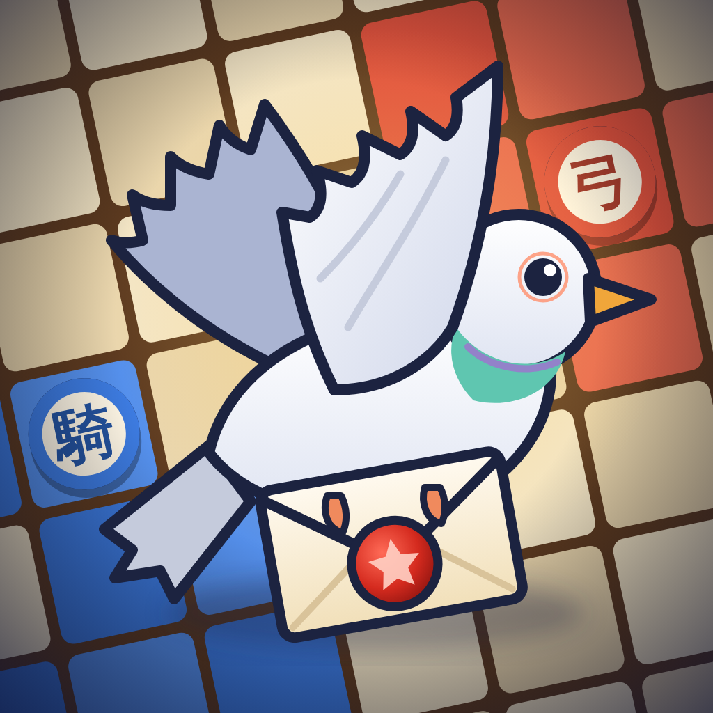

伝書鳩の盤 サポート
Pigeon Orders — Support
お問い合わせ
不具合やご意見は、下記のメールアドレスまでお送りください。iPhone の機種、iOS のバージョン、アプリのバージョン（設定 ⚙ → クレジットに表示）を書いていただけると助かります。
Smidem — smiskigame@gmail.com
よくある質問
どんなゲーム？
7×7 の盤で戦う1対1のボードゲームです。命令は伝書鳩が運ぶので、書いてから2ターン後に実行されます。相手の動きを読んで、本陣を取るか全滅させれば勝ち。16ターンで決まらなければ陣地の広さで勝負します。
遊び方を見直したい
メニューの「遊び方」か、設定 ⚙ →「チュートリアルをもう一度」「ルール」で確認できます。
購入したスキンが消えた・機種を変えた
設定 ⚙ →「購入を復元」、または鳩舎ショップの一番下の「購入を復元」を押してください。購入時と同じ Apple ID でサインインしている必要があります。
課金すると強くなりますか？
いいえ。販売しているのは見た目のスキンだけです。駒・鳥札・モードはすべて遊んで手に入ります。
オンライン対戦がつながらない
電波のよい場所でもう一度お試しください。相手が見つからないときは、20秒後に「CPUと対戦する」を選べます。友達とは「友達対戦」の4けたの合言葉で遊べます（10分で期限切れ）。対戦中に通信が切れても、45秒以内に戻れば続きから遊べます。
音や振動を止めたい
設定 ⚙ で BGM・効果音・振動をそれぞれオン／オフできます。
言語を変えたい
設定 ⚙ → 言語 で、日本語・English・简体中文・繁體中文・한국어 を選べます。
記録を消したい
記録は端末の中にだけあります。アプリを削除すると消えます（購入したスキンは「購入を復元」で戻せます）。
Contact
For bugs or feedback, email us with your iPhone model, iOS version and app version (Settings ⚙ → Credits).
Smidem — smiskigame@gmail.com
FAQ
What kind of game is this?
A 1-on-1 board game on a 7x7 grid. Every order is carried by a pigeon and is carried out two turns after you write it. Take the enemy castle or capture every enemy piece; after 16 turns the larger territory wins.
My purchased skins are gone / I have a new iPhone
Tap Settings ⚙ → "Restore purchases", or "Restore purchases" at the bottom of the Loft Shop, while signed in with the same Apple ID.
Do purchases make me stronger?
No. Only cosmetic skins are sold. Every piece, bird card and mode is earned by playing.
Online play does not connect
Try again with a good connection. If nobody is found, you can play the CPU after 20 seconds. Play friends with a 4-digit code (valid for 10 minutes). If you lose connection during a match, come back within 45 seconds to continue.
Sound, vibration, language
Settings ⚙ has switches for music, sound effects and vibration, and the language selector (Japanese, English, Simplified Chinese, Traditional Chinese, Korean).
中文 / 한국어
如有问题，请发邮件至 smiskigame@gmail.com。恢复购买：设置 ⚙ →「恢复购买」。内购仅限外观，不影响强弱。
如有問題，請寄信至 smiskigame@gmail.com。恢復購買：設定 ⚙ →「恢復購買」。內購僅限外觀，不影響強弱。
문의: smiskigame@gmail.com. 구매 복원: 설정 ⚙ → '구매 복원'. 결제는 외형 스킨뿐이며 강함에는 영향이 없습니다.